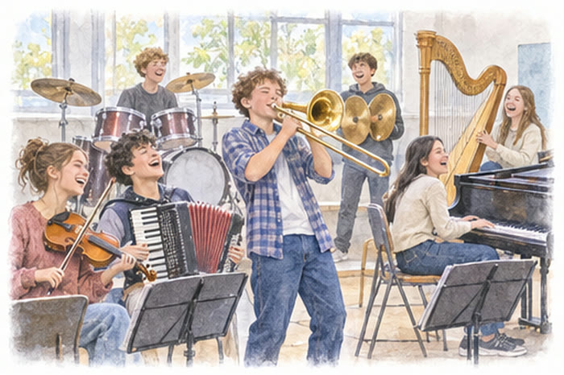

Listen to the text
Speed:

Our school has a small orchestra. It is not perfect, but it is ours. Last week our conductor, Mr Yevhen, put a notice on the door: "We need new musicians! Everybody is welcome." I went to the first rehearsal just to look. Here is who I saw. Solomiia is the violinist. She has played since she was five, and she is the only one who never plays a wrong note. Next to her sits Artem, the accordionist. His grandfather taught him. When Artem plays, even the teachers start dancing. Hordii is the drummer. He is the loudest person in the school, with or without drums. Behind him stands Ivan, the cymbalist. He plays only six times in one piece, but he must not miss his moment. He counts all the time. Zlata is the pianist. She also helps everybody to find the right note. Yana is the harpist. Her harp is taller than she is, and her dad brings it in a van. There is a guitarist, Nazar, who plays the electric guitar and wants to turn every piece into rock. And there is Viktor, the saxophonist. He joined a month ago and already has three fans. "And what do you play?" asked Mr Yevhen. "Nothing," I said. "I can only whistle." He looked at me for a long time. "We have no trombonist," he said. "The trombone has been in the cupboard for four years. You have long arms. Try." I tried. The sound was like a sad elephant. Everybody laughed, and so did I. I have a lesson every Tuesday now.
Tap any sentence to hear it again.
Сподобалось? На сайті ще більше матеріалів для вчителів!
Reader, презентації, ігри, діагностичні та контрольні роботи до підручників 1-11 класів.
Перейти на сайт materials.allaenglish.com